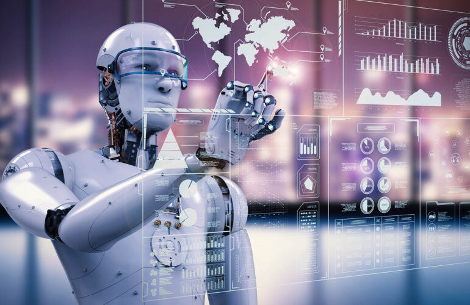
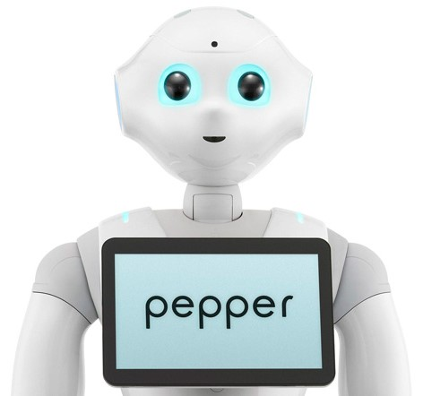
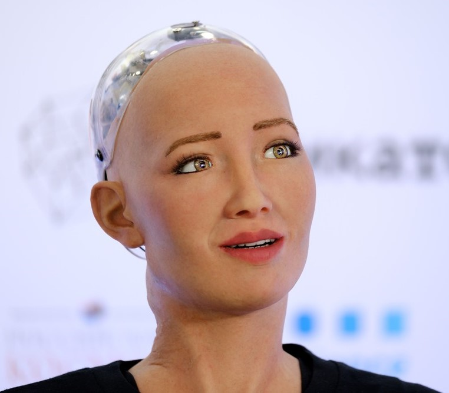
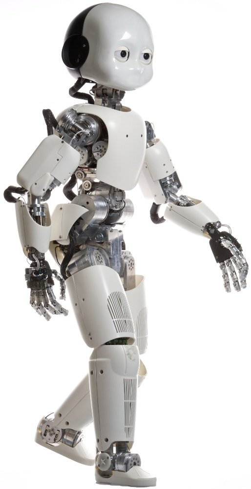
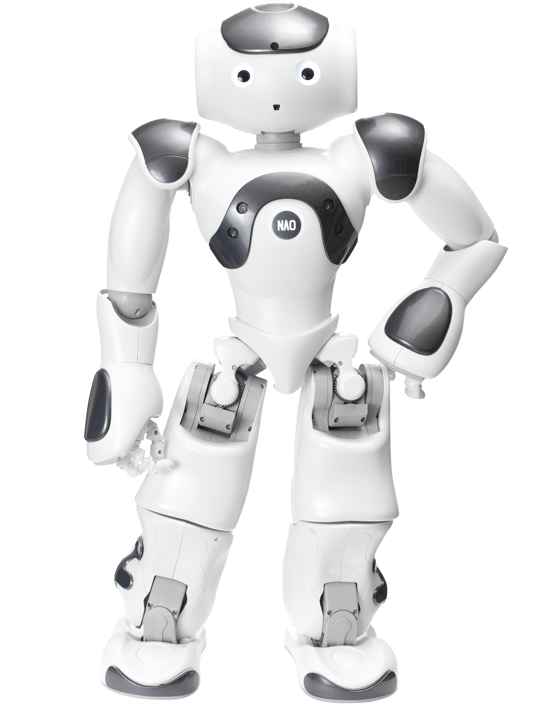

Inicio › Humanoides
HumanoidesCuatro robots humanoides que debes conocer
Publicado el 12 de octubre de 2026 · Lectura de 4 min

Los robots humanoides tienen forma humana: cabeza, tronco, brazos y, a veces, piernas. Construirlos es muy difícil porque mantener el equilibrio o coger un objeto sin romperlo, algo que para nosotros es automático, requiere muchísimos cálculos. A cambio, su aspecto hace que nos resulte más natural interactuar con ellos. Estos son cuatro de los más conocidos.




Pepper
Presentado en 2014 por SoftBank Robotics, Pepper mide alrededor de 1,20 m, se desplaza sobre ruedas y lleva una tableta en el pecho. Está pensado para atender al público en tiendas, bancos o recepciones, y es capaz de reconocer caras y algunas emociones básicas.
Sophia
Creada por Hanson Robotics, Sophia es famosa por su rostro realista, capaz de imitar decenas de expresiones. En 2017 se convirtió en el primer robot en recibir una ciudadanía (la de Arabia Saudí), un gesto simbólico que abrió el debate sobre los derechos de las máquinas.
iCub
Desarrollado por el Instituto Italiano de Tecnología, iCub tiene el tamaño de un niño de unos cuatro años. Su diseño es de código abierto y lo usan laboratorios de todo el mundo para estudiar cómo aprende un "cerebro" artificial a través del tacto, la vista y el movimiento.
Nao
Nao es un pequeño humanoide de unos 58 cm que puede caminar, hablar y bailar. Es muy popular en colegios y universidades para enseñar programación, y durante años ha sido el robot oficial de una de las ligas de fútbol de la competición RoboCup.
Humanoides en la ficción
Mucho antes de Pepper o Sophia, los humanoides ya eran protagonistas en el cine y la literatura: C-3PO en Star Wars, el T-800 de Terminator, los replicantes de Blade Runner o Andrew, el robot de El hombre bicentenario de Asimov. Estas historias han moldeado lo que esperamos (y tememos) de los robots reales.